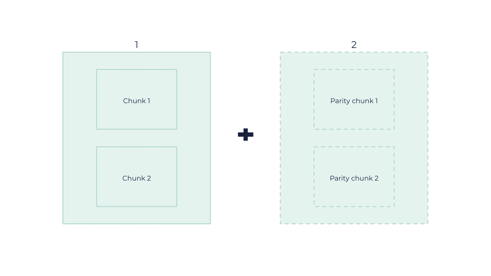
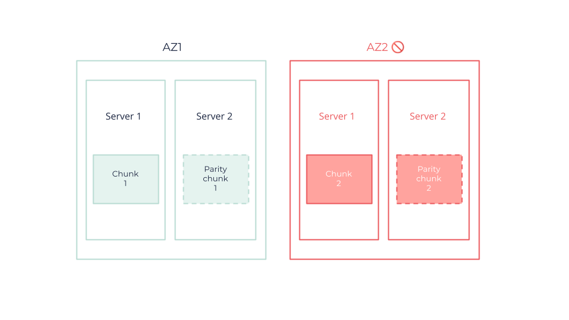
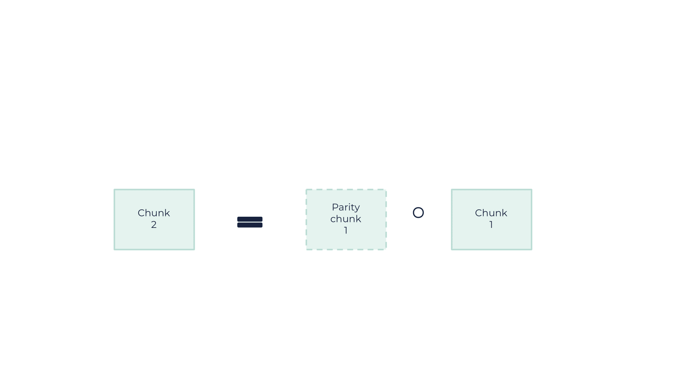

OOS Resilience Mechanisms
The OUTSCALE Object Storage (OOS) solution is based on two technologies:
-
Erasure coding: for larger data sets to save space and enhance protection,
-
Replication: for smaller data sets to quickly recover data and minimize loss.
This optimal combination ensures that each piece of data is stored in the most efficient way possible, depending on their size.
What Is Erasure Coding?
Erasure coding is a data protection method that consists in enhancing fault tolerance and optimizing storage efficiency.
It works by dividing the original data into multiple pieces and adding parity chunks (encoded redundant data). That way, the data can be easily reconstructed even if several parts are lost or corrupted in case of environment failures.
Erasure coding also allows to recover data from a subset of the original fragments since data is distributed across different locations, servers, and drives within the same Region. This makes erasure coding especially resilient against simultaneous failures.
What Erasure Coding Does To Your Object

-
Divides it into several chunks of data
-
Encodes additional data to ensure redundancy and integrity
|
With this example, having two chunks of data and two parity chunks allows a maximum loss of two chunks amongst the total four. |
What Happens In Case of AZ Failure?

In this example, the integrity of the object is maintained even when losing two chunks (or a whole AZ) because two chunks are enough to restore the object. This is done through a binary operation: in this scenario, chunk 2 is obtained through chunk 1 and parity chunk 1.

What Is Replication?
|
The process described here concerns the internal mechanisms for data security and resilience on OOS, which fall within the responsibility scope of OUTSCALE. It does not pertain to the higher-level bucket replication feature as provided by S3, which is not yet supported on our end. |
Replication is a process used to enhance data availability and durability across different AZs. As erasure coding is reliable for large objects, replication is a process used to improve the availability and durability of data in different AZs for small objects.
It involves creating multiple copies of data, known as replicas, and distributing them across distinct physical locations depending on a replication factor.
For example, if using a replication factor of three, three additional copies of a given data are created, resulting in a total of four copies. These two copies are then stored in a first AZ, and the remaining two are stored in a second AZ. This distribution allows for better fault tolerance by enabling data recovery even if an entire zone happens to fail.
Replication across multiple zones thus guarantees strong data resilience, which is ideal for critical environments where continuous data accessibility is crucial.